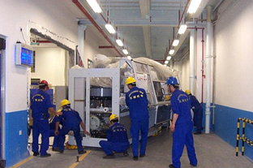
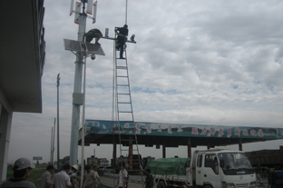
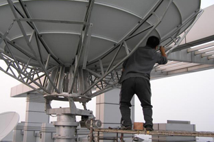

为了保证中国用户安心安全享用波士维纳温疗仓，虽然在日本波士维纳温疗仓没有事故记载，日本美丽庄园公司还是特请北京的高技术公司《北京天电技术有限公司担任技术维修》
北京天电技术有限公司为北京中关村的高新技术企业，北京天电致力于为客户提供优质产品和技术服务，业务领域包括：安全技术防范、计算机信息系统集成、工业控制、医疗设备维护及服务。
北京天电凭借完善的市场、技术、管理体系，高素质的产品研发、工程技术队伍，业务领域已经覆盖了全国各省，在研发设计、技术咨询、成套设备供货、施工安装、技术服务、试车投产、人员培训等的全过程提供优质服务。
北京天电具有计算机信息系统设计、安装、调试及软硬件研发能力，可根据用户的需求开发相应的软硬件产品。北京天电可提供工业技术设计、设备制造、产品安装、调试和培训等全过程承包和技术服务。
北京天电长期秉承“创新服务，合作发展”的经营理念。技术上，不断地将新技术、新产品运用到用户的系统解决方案中；服务上，以“让用户用好每一套系统、每一台设备”为经营目标，为用户提供长期完善的技术支持服务。
北京天电技术力量雄厚，拥有数十名高中级科研及技术开发人员和工程项目管理人员，其中大部分接受过专门培训，参加过许多大型工程项目的设计和安装调试。
公司注重新技术的引进、开发及应用。不断跟踪世界先进技术，重视新技术和高科技人才的储备和发挥，每年都派出数名技术和管理人员前往国外考察和培训。
公司不仅拥有优秀的产品研发设计人员和高级技术工人，还有一支高素质的市场和售后服务队伍，并已建立了完备的销售渠道和服务网络，为客户提供完善的售前、售后服务，包括：限时服务，售前和售后的免费培训，终身维护及软件免费升级等服务。
  